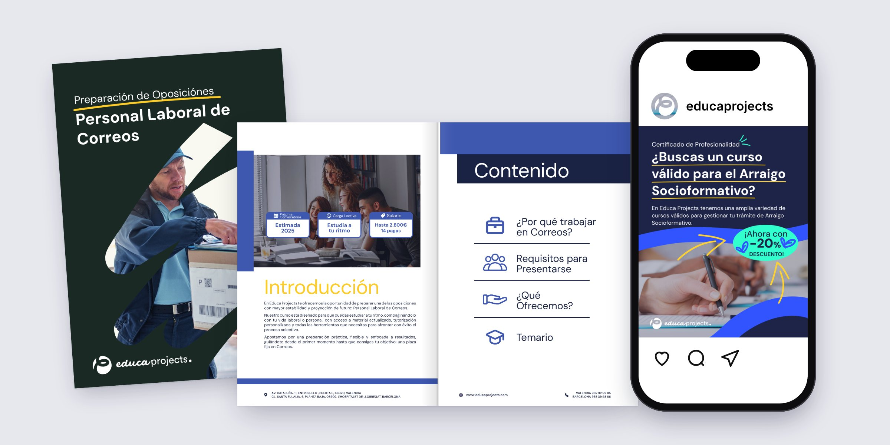
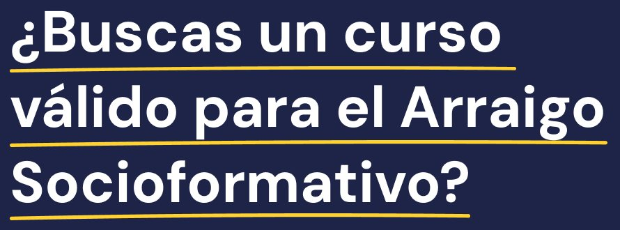
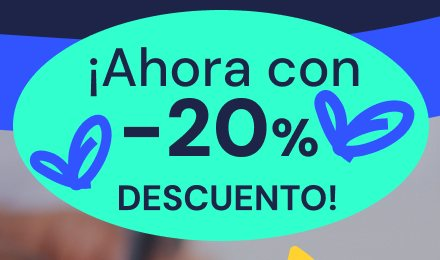
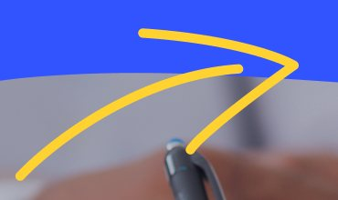
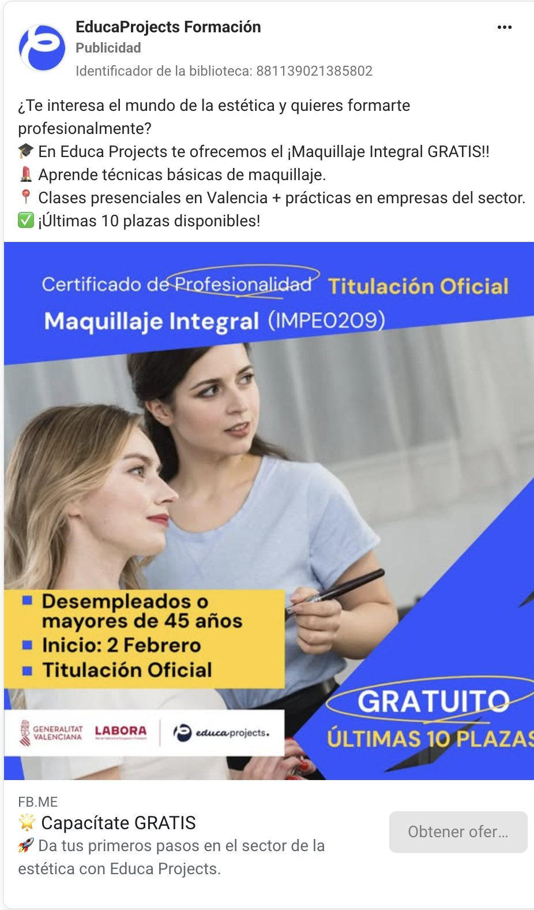
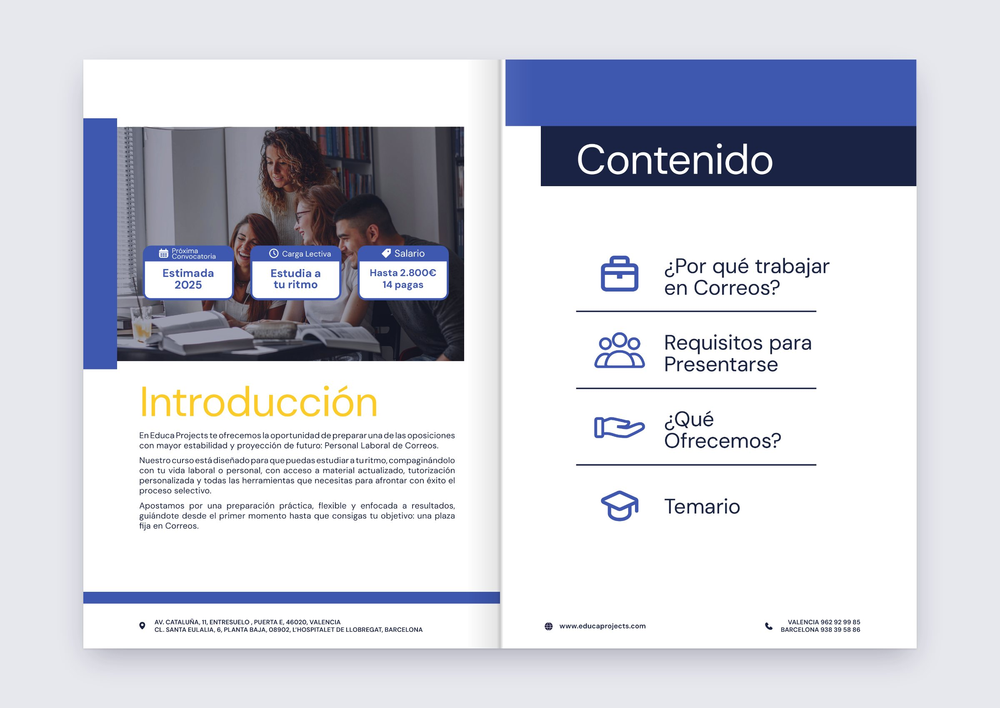
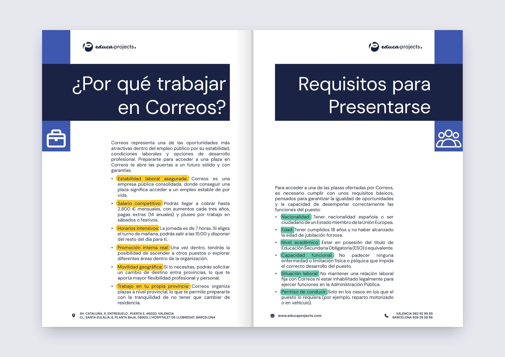
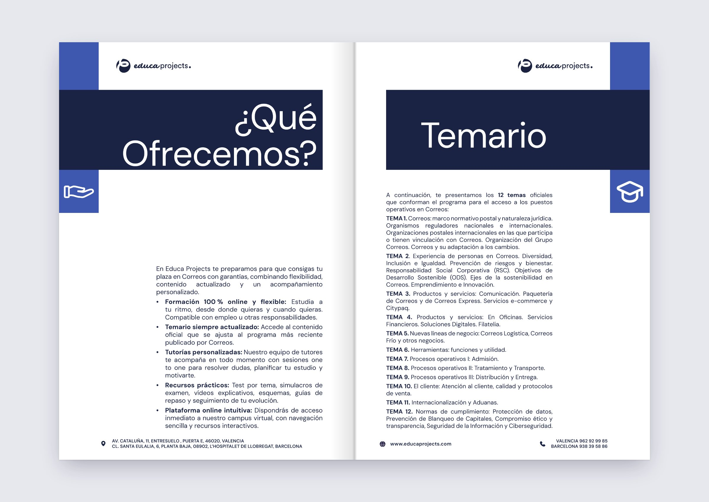
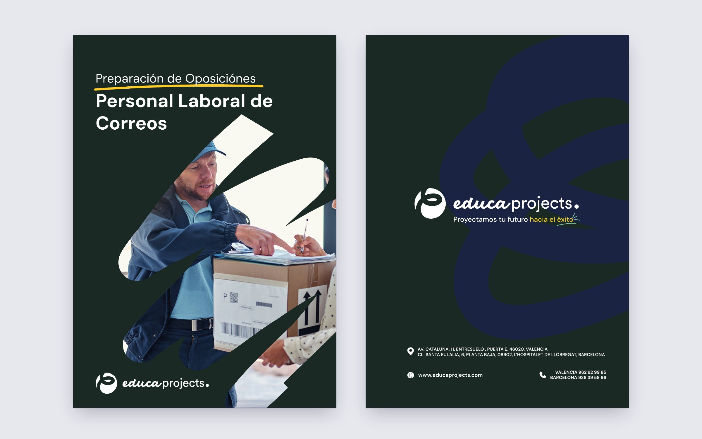

Experience · In-house · Education
Educa Projects.
A year as the in-house designer of a vocational training school in Valencia and Barcelona.
- Role
- Graphic design & visual marketing
- When
- Aug 2024 — Aug 2025
- Channels
- Instagram · Meta Ads · Print
- Tools
- Illustrator · InDesign · Photoshop · Ads Manager


Official courses, many of them free. Still a hard sell in a feed.
Educa Projects teaches Certificados de Profesionalidad and exam preparation from two centres, one in Valencia and one in L’Hospitalet. A good part of the catalogue is free for unemployed students, funded through LABORA. The people on the other side of the ad are career changers and over-45s looking for an official qualification.
I joined in August 2024 and worked on the redesign of the brand and its rollout, alongside an outside agency. This page is about the rollout: getting the identity to hold up on a 1080 px post, on an ad seen for a second between two reels, and on an A4 dossier someone reads at home before calling to enrol.
- Company
- Educa Projects
- Sector
- Vocational training
- Centres
- Valencia · Barcelona
- Team
- In-house, plus agency
- Output
- Posts, ads, dossiers, web
- Web
- WordPress · WooCommerce
Details
Four colours and a marker pen.
Navy carries the text. Electric blue comes in as a wave across the photo. Mint and yellow are rationed: mint for the offer, yellow for whatever line has to be read first. On top sits a hand-drawn layer that keeps the pieces from looking like a government form.
- Navy#1E2448Backgrounds, text
- Electric blue#3254FEWaves, icons
- Mint#30FFCBOffers, stickers
- Yellow#FFD23FUnderlines, arrows




Ten places left, and the ad has to say so before the scroll.
Many of the ads were for free courses funded through LABORA, and each one came with the same must-haves: the official title and its code, who can apply, the start date and the logos of the funders. That leaves little room, so the hierarchy was fixed. Course name at the top, conditions in a yellow block, Gratuito circled in the corner.
Beyond the creative, I ran the campaigns in Ads Manager and tracked how each one performed.


Course dossiers.
One example of the course dossiers, this one for the Correos exam prep. A4, laid out in InDesign. The course information is ordered around the questions a future student asks, from the one that matters most to the one that matters least. Every section opens with a navy title band and its own icon, the same icons used on the contents page. Inside, the key words of each point are highlighted: yellow for what the job offers, mint for what you need to apply. A quick look is enough to get the gist.








Playground →